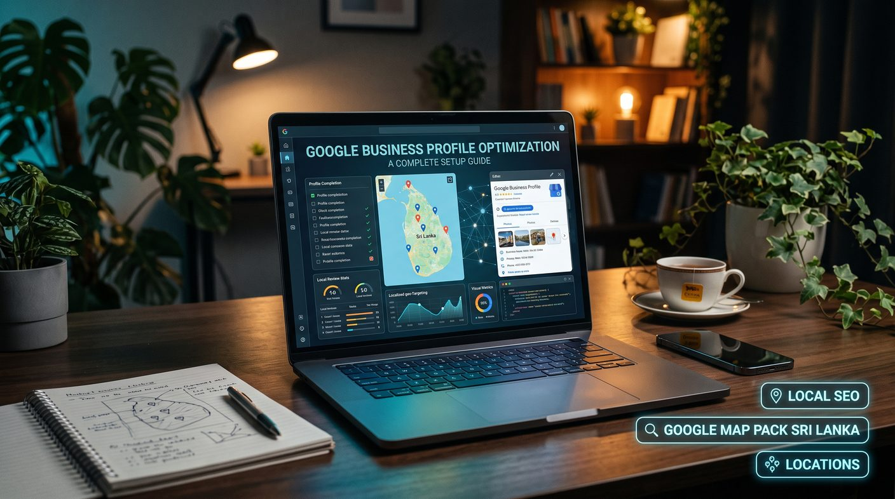

To optimize a Google Business Profile, confirm your business is eligible, claim and verify the listing, use your real business name, choose accurate categories, keep address, hours, phone and website consistent, add genuine photos and services, earn honest reviews, and track calls and clicks. Never keyword-stuff the name, use a false address or buy reviews, and remember no setup guarantees a Map Pack ranking.
- What is a Google Business Profile?
- Why Google Business Profile optimization matters
- Step 1: Check whether your business is eligible
- Step 2: Create or claim your business profile
- Step 3: Choose the correct business name
- Step 4: Select the best primary and additional categories
- Step 5: Enter accurate contact information
- Step 6: Write a helpful business description
- Step 7: Add services, products and relevant details
- Step 8: Upload high-quality business photos
- Step 9: Build a genuine customer review process
- Step 10: Publish useful updates when appropriate
- Step 11: Keep your website and local business details consistent
- Step 12: Measure your Google Business Profile performance
- Common Google Business Profile optimization mistakes
- Google Business Profile optimization checklist
- How long does Google Business Profile optimization take to work?
- Conclusion
What is a Google Business Profile?
A Google Business Profile is a free business listing that eligible businesses can manage to help customers find information about them on Google Search and Google Maps. Depending on the business and the available features, a profile can display the business name, address or service area, opening hours, phone number, website, photos, reviews and other details.
Someone searching for a plumber in Kurunegala or a restaurant in Colombo, for example, may see local business listings alongside a map. A complete and accurate profile gives potential customers useful information when they decide which business to contact.
Google Business Profile optimization is the process of improving the accuracy, completeness and usefulness of that listing while following Google's guidelines.
Why Google Business Profile optimization matters
Local search can connect businesses with people who are already looking for nearby products or services. A properly maintained profile can help customers:
- Find your business through relevant local searches.
- Check your address, service area and opening hours.
- Call your business or visit your website.
- View photos and learn more about your services.
- Read customer reviews before making a decision.
- Get directions to your physical location, when applicable.
Profile optimization does not guarantee a particular ranking or placement in Google Maps. Local results are influenced by several factors, including relevance, distance and prominence. Your website, business information, competition and the searcher's location can all affect what appears.
For a broader explanation of local rankings, read our guides to the Google Map Pack in Sri Lanka and ranking in Google Maps in Colombo.
Step 1: Check whether your business is eligible
Before creating a profile, confirm that your business meets Google's eligibility requirements. In general, a business should make in-person contact with customers during its stated operating hours. This includes businesses that serve customers at their own premises and eligible service-area businesses that travel to customers.
Online-only businesses that do not have qualifying in-person customer contact are generally not eligible for a Google Business Profile.
Choose the setup that accurately reflects how your business operates:
- Storefront business: customers visit your staffed business location during the stated hours.
- Service-area business: you travel to customers, such as a plumber, electrician or mobile repair service.
- Hybrid business: customers can visit your eligible location and you also travel to serve them.
If you run a business from home and visit customers, check Google's rules before deciding whether your address should be displayed. A residential address should not be shown publicly when the business operates as a service-area business and customers are not served at that address.
Step 2: Create or claim your business profile
Visit Google Business Profile and sign in with the Google Account you want to use to manage the listing.
- Search for your business name to check whether a profile already exists.
- If a profile exists, follow the available process to claim or request access to it.
- If no profile exists, add your business and provide the requested information.
- Enter your details carefully and select the business type that matches your actual operations.
- Complete the verification process offered by Google.
Google determines which verification methods are available. These vary by business and can include video, phone, email or other methods. Follow the instructions shown in your account rather than relying on a method that may not be available to you.
Do not create duplicate profiles to target multiple keywords or locations. If you find duplicate listings, review Google's guidance and use the appropriate process to resolve them.
Step 3: Choose the correct business name
Your business name should match the name customers recognise in the real world. Use the name shown consistently on your business signage, website, stationery and other genuine business materials.
Avoid adding extra keywords, locations, slogans or service lists to the business name when they are not part of the real-world name.
If your actual business name is "ABC Electrical", for example, do not change it to "ABC Electrical Best Electrician Colombo Cheap Electrical Repairs" just to target more searches.
Keyword stuffing in a profile name can violate Google's guidelines and may lead to editing restrictions or other profile issues. Use your business description, appropriate categories and service information to explain what you do instead.
Step 4: Select the best primary and additional categories
Business categories help Google understand what your business does. Your primary category is particularly important because it should describe the main activity of the business, not every service you offer.
To choose suitable categories:
- Select the most specific available category that accurately represents your core business.
- Add secondary categories only when they describe genuine, significant business activities.
- Review the available options periodically because category choices may change.
- Avoid selecting unrelated categories simply because they have attractive search demand.
A restaurant should select a category that describes its actual restaurant type. A company providing professional SEO services should choose an appropriate category available for that service rather than unrelated marketing or software categories.
Do not create multiple profiles for different services unless each location or business independently meets Google's eligibility requirements.
Step 5: Enter accurate contact information
Complete every relevant field that applies to your business. Keep your profile consistent with the information customers see on your website and other trusted business listings.
Business address
For eligible storefronts, use the real location where the business operates and serves customers. Make sure the address is precise enough for customers to find you. Do not use a virtual office, an unstaffed location or another address simply to appear in a target town.
Service areas
If you travel to customers, add the towns, cities or areas you genuinely serve. Choose realistic areas based on your operations. Adding a large list of locations does not guarantee rankings in those places.
Phone number
Use a telephone number that connects customers to your business. Make sure it is active and monitored. If you serve customers throughout Sri Lanka, use a number customers can reliably reach.
Website
Link to your official website or the most relevant landing page for the business. Check that the URL works, loads securely and displays consistent business information.
Opening hours
Set your normal operating hours accurately and update special hours for public holidays or temporary changes when the feature is available. Incorrect hours frustrate customers and damage trust.
Step 6: Write a helpful business description
Your business description should tell potential customers what your business does, who you serve and what makes your service useful. Keep it natural, specific and accurate.
A useful description can include:
- Your main products or services.
- The type of customers you serve.
- Your genuine service coverage.
- Relevant experience or distinguishing features that can be substantiated.
For example:
We provide professional search engine optimization services for businesses in Sri Lanka. Our services include technical SEO audits, keyword research, on-page optimization and local SEO. We help businesses improve website quality, strengthen local search visibility and build a more useful experience for potential customers.
Adapt the wording to your actual business. Avoid promotional claims, links, prices or repeated keyword lists where Google's description guidelines do not permit them. The description should inform customers rather than read like a search-engine keyword list.
Step 7: Add services, products and relevant details
Use the profile fields available to your business to explain what customers can buy or book. Depending on the business category, you may be able to add services, products, menus, appointment links or other useful information.
For a service business, list the core services customers actually request. For a retail business, keep product information accurate and up to date where product features are available.
Use clear service names and concise descriptions. Avoid adding unrelated terms or creating misleading offers to attract search traffic.
Complete relevant attributes when they accurately describe the business. Examples can include accessibility features, payment options or other details offered through the profile interface. Available attributes vary by category and location.
Step 8: Upload high-quality business photos
Genuine photos help customers understand what to expect before they visit or contact your business. Upload clear, recent images that represent your actual premises, team, products or work.
Useful photo types include:
- Exterior photos: help customers recognise your building or entrance.
- Interior photos: show the real customer-facing environment.
- Product photos: present products that customers can genuinely purchase.
- Team photos: introduce the people customers may interact with.
- Work examples: show completed projects or services where appropriate.
Use well-lit images that represent the business honestly. Avoid stock images presented as real premises or staff, misleading edits and photos that reveal private customer information.
No universal number of photos guarantees higher rankings. Prioritise accurate, useful images and add new ones when the business, products or premises change.
Step 9: Build a genuine customer review process
Customer reviews help prospective customers assess your business. They also give you an opportunity to understand what customers appreciate and where your service can improve. See how we display real feedback on our customer reviews page, and follow our step-by-step guide to getting more Google reviews in Sri Lanka.
Build a sustainable review process by:
- Providing a good customer experience.
- Asking genuine customers to leave an honest review.
- Sharing your Google review link through appropriate customer communication channels.
- Responding professionally to positive and negative feedback.
- Using recurring feedback to identify service improvements.
Never buy reviews, create fake customer accounts, offer incentives in exchange for reviews or selectively ask only satisfied customers to post reviews. These practices can violate Google's policies and undermine trust.
When responding to a negative review, stay calm and factual. Acknowledge the concern, avoid exposing private information and offer an appropriate way to continue the discussion offline.
Review count and ratings are not the only considerations for customers, and no guaranteed review target secures a top local ranking.
Step 10: Publish useful updates when appropriate
Where Google Business Profile posts are available, use them to share meaningful updates with potential customers. Suitable topics may include a new service, a genuine offer, a seasonal announcement, a business event or a change in operating arrangements.
Keep posts accurate, easy to understand and relevant to your customers. Use suitable images and a clear call to action when it helps the customer take the next step.
Posting every day is not a guaranteed ranking requirement. Focus on keeping customers informed instead of publishing repetitive updates just to insert keywords.
Step 11: Keep your website and local business details consistent
Your Google Business Profile should reflect the same real business represented on your website. Review your contact information, business name, address and opening hours across the website and important business directories.
Consistency helps customers confirm they have found the correct business. It can also reduce confusion caused by old addresses, outdated telephone numbers or duplicate listings. The same principle applies to your wider brand entity and to directory listings, as covered in our guide to building backlinks in Sri Lanka.
For a business serving several districts in Sri Lanka, create useful location pages only where you can provide relevant, accurate information for those areas. Each page should explain the services available, genuine service coverage and useful local details.
Do not create misleading locations or near-identical pages that differ only by town name. A page for Colombo should not claim a physical Colombo office if the business does not have one.
Explore our location pages to see how local service coverage can be organised on a website, including Colombo, Kandy and Kurunegala, and visit our local SEO service page for more on improving local search visibility. Industry examples are in local SEO for restaurants, clinics and tour operators. If your business is outside the capital, read how regional businesses win local searches.
Step 12: Measure your Google Business Profile performance
Review the performance information available in your Business Profile and compare it over time. Depending on your profile and Google's reporting features, you may be able to review information such as searches, views and customer interactions.
Useful measures include:
- Calls generated through the profile.
- Website clicks from the listing.
- Requests for directions, where relevant.
- Customer enquiries and completed bookings.
- Changes in review volume and recurring feedback.
- Organic website traffic and enquiries from local landing pages.
Do not judge performance by checking one search term from one device or location. Google results differ depending on the searcher's location, the query and other contextual factors.
Use Google Search Console and website analytics alongside Business Profile performance data to understand whether local visibility is contributing to meaningful business outcomes. Where appropriate, use campaign tracking parameters on website links so you can better identify traffic sources in your analytics platform.
Common Google Business Profile optimization mistakes
Even a verified profile can have issues that reduce its usefulness or create policy risks. Avoid these common mistakes:
- Keyword stuffing the business name: use the genuine real-world name.
- Choosing irrelevant categories: select categories that match actual business activities.
- Using a false address: do not create a location where the business does not qualify to operate.
- Creating duplicate profiles: resolve existing listings instead of multiplying them.
- Buying reviews: request genuine, unbiased feedback from real customers.
- Leaving incorrect hours: keep normal and special hours updated.
- Ignoring customer questions or reviews: respond when appropriate and protect private information.
- Uploading misleading photos: use genuine images that accurately represent your business.
- Expecting instant rankings: local SEO is competitive and results are not guaranteed.
- Creating location pages without local value: publish pages that genuinely help customers in the areas you serve.
Google Business Profile optimization checklist
Use this checklist when setting up a new listing or reviewing an existing profile.
- Confirm that the business is eligible for a profile.
- Claim the correct listing and complete Google's verification process.
- Use the genuine business name.
- Select the most appropriate primary category and relevant secondary categories.
- Check the address or service area.
- Verify the phone number and website URL.
- Update normal and special opening hours.
- Write a clear, accurate business description.
- Add relevant services, products and attributes where available.
- Upload genuine, high-quality photos.
- Set up a policy-compliant process for requesting customer reviews.
- Respond to reviews professionally.
- Share useful updates when appropriate.
- Check for duplicate or outdated listings.
- Keep website information and local landing pages accurate.
- Monitor profile interactions and real business enquiries.
How long does Google Business Profile optimization take to work?
There is no fixed timeline for improving local search visibility. Some profile changes appear relatively quickly, while changes in rankings, customer behaviour or competitive performance can take longer and may fluctuate.
Results depend on factors such as your business category, proximity to the searcher, local competition, profile accuracy, reputation and the quality of your wider online presence. Verification, edits or policy reviews can also affect when certain information appears.
Instead of expecting an immediate ranking change, establish a baseline, complete the essential improvements and monitor performance consistently. Prioritise relevant enquiries and customer experience over rankings alone.
Conclusion
Google Business Profile optimization starts with accurate business information, the right categories, a clear description and a listing that reflects how your business actually operates. Genuine photos, honest customer reviews, updated hours and useful website content help customers make informed decisions.
For Sri Lankan businesses, the best approach is to maintain the profile consistently, follow Google's guidelines and measure meaningful customer interactions instead of relying on ranking checks alone.
If you need help improving your local search strategy, explore our local SEO services or talk to an SEO specialist in Sri Lanka. A structured approach to your profile, website and local content builds a stronger foundation for long-term visibility.